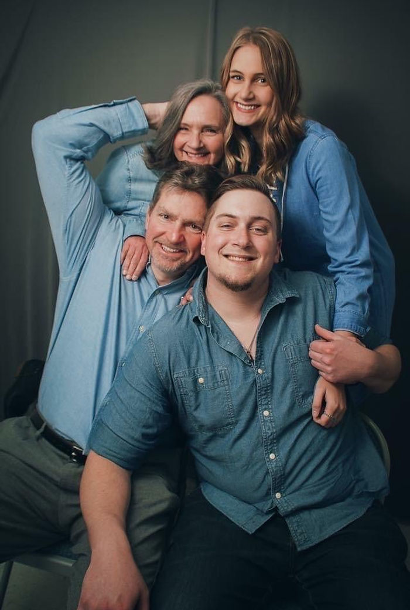

Pastoral Leadership
Pastor Blair Stewart & Tina Stewart
Serving with a heart for old-time preaching, personal discipleship, and Christ-centered church family life.
A Warm Welcome
Pastor Blair Stewart and his wife, Tina, have a burden for faithful preaching of God's Word and compassionate care for local families. Their ministry emphasizes prayer, biblical teaching, and practical discipleship grounded in Scripture.
Whether you are searching for a church home, returning to church, or visiting from out of town, Pastor Blair and Tina desire for you to feel welcomed and encouraged from your first Sunday.
Ministry Focus
Biblical Preaching
Every service centers on clear preaching from the King James Bible.
Family Fellowship
Zion Hill values Christian encouragement, prayer, and genuine church family relationships.
Community Outreach
Local ministry includes personal outreach, Sunday services, and the weekly WHKP radio broadcast.
Questions Before You Visit?
If you need help with directions, service details, or prayer, we would be glad to help.